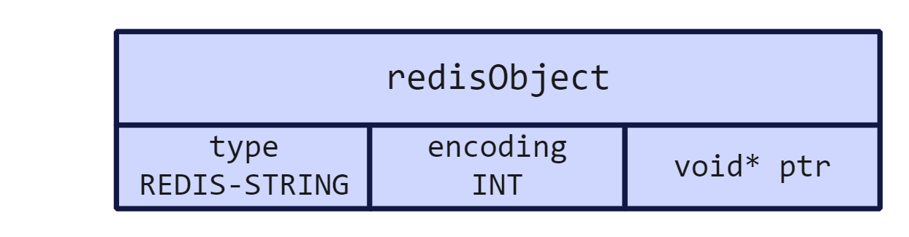
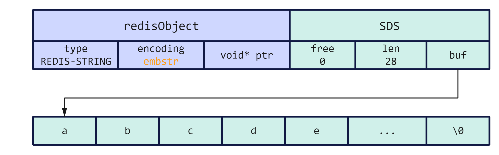
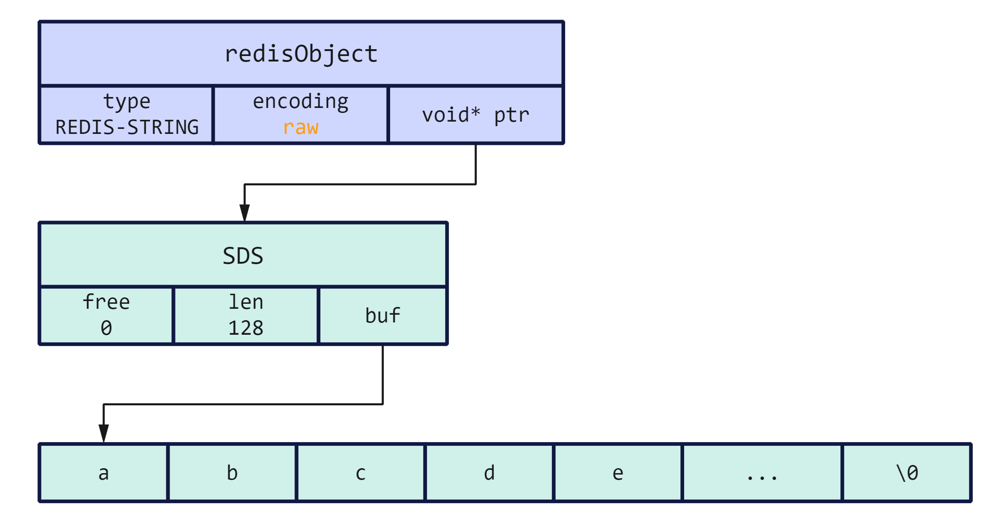
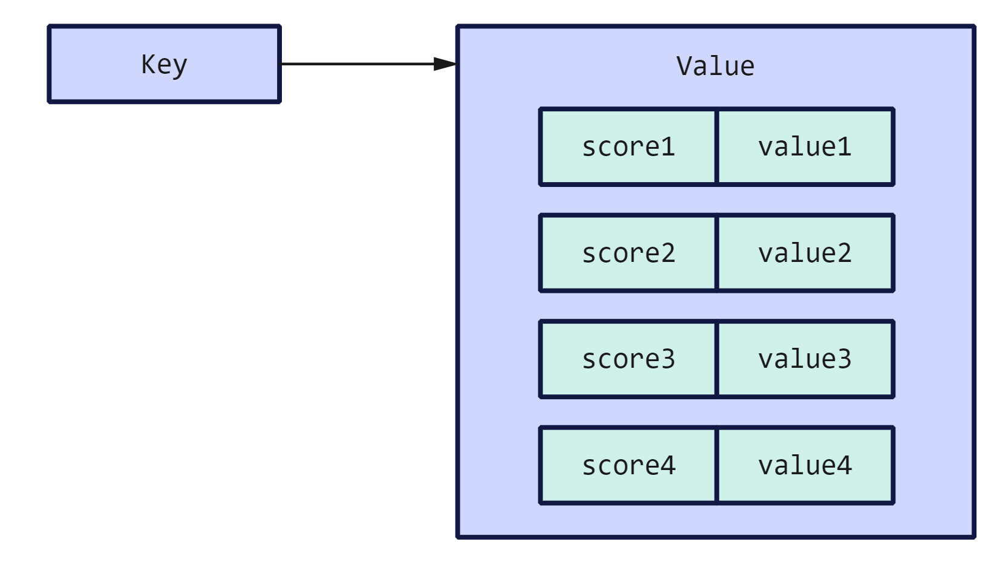

Redis简介与基本数据类型
Redis 简介
Redis 是一种基于内存的 KV 型数据库，对数据的读写操作都是在内存中完成，因此读写速度非常快，常用于缓存、消息队列、分布式锁等场景。
Redis 提供了多种数据类型来支持不同的业务场景，比如 String（字符串）、Hash（哈希）、List（列表）、Set（集合）、Zset（有序集合） 等，并且其对数据类型的操作都是原子性的，这是因为执行命令是由单线程完成的，不存在并发竞争的问题。
Redis 是 KV 型的数据库，其中 Key 都是 String 类型，Value 是上述类型中的一种。根据 Key 指定的名字可以获得对应的数据类型。
Redis 具备高性能，如果用户每次访问的数据存在磁盘中，这个过程会比较慢。如果将数据缓存在 Redis 中，则下一次访问数据时就可以直接从缓存中获取了，操作 Redis 就是直接操作内存，所以速度相当快。
Redis 还支持设置键值对的过期时间，对应缓存的过期语义。当到达过期时间后，对应的键值对就不存在了。
基本数据类型
Redis 提供的基本数据类型有五种，如 String（字符串）、Hash（哈希）、List（列表）、Set（集合）、Zset（有序集合） 等。
String
介绍
String 是最基本的 KV 结构，Key 是唯一标识，Value 是具体的值，值可以是字符串（包括二进制串），也可以是数字（整数或浮点数），Value 最多可以容纳的数据长度是 512M。
内部实现
String 类型的底层的数据结构实现是 SDS（简单动态字符串）。
SDS 相比 C 原生的字符串：
- SDS 可以保存文本数据，还可以保存二进制数据。因为 SDS 使用内部属性
len的值而不是字符\0来判断字符串是否结束。所以 SDS 不仅能存放文本数据，还能保存图片、音频等二进制数据。 - SDS 获取字符串长度的时间复杂度是 O(1)。因为 C 语言的字符串并不记录自身长度，所以获取长度的复杂度为 O(n)，而 SDS 结构里用
len属性记录了字符串长度，所以复杂度为 O(1)。 - SDS 的 API 是安全的，拼接等操作不会造成缓冲区溢出。因为 SDS 在拼接字符串之前会检查 SDS 空间是否满足要求，如果空间不够会自动扩容，所以不会导致缓冲区溢出的问题。
在 Redis 中，有一个通用结构体表示 Redis 对象，不同的对象类型通过 type 字段区分，而对于每种类型，可能有不同的实现方式，用编码（encoding）表示，而实际的对象存储位置保存在指针中，String 类型且以 int 编码的字符串对象的结构体如下：
字符串对象的内部编码有三种：int、raw 和 embstr。
如果一个字符串对象保存的是整数值，并且这个整数值可以用 long 类型表示，那么字符串对象会将整数值保存在对象结构的 ptr 属性中。
如果字符串对象保存的是一个字符串，且这个字符串的长度小于等于阈值，那么字符串对象将使用一个简单动态字符串（SDS）来保存这个字符串，并将对象的编码设置为 embstr，是专门用于保存短字符串的一种优化编码方式：
如果字符串对象保存的是一个字符串，并且这个字符串的长度大于阈值，那么字符串将使用一个简单动态字符串（SDS）来保存这个字符串，并将对象的编码设置为 raw：
embstr 编码和 raw 编码的边界在 Redis 不同版本中是不一样的：目前为 44 字节。
可以看到 embstr 和 raw 编码都会使用 SDS 来保存值，但不同之处在于 embstr 仅会通过一次内存分配函数申请一块大内存来相邻的保存 redisObject 和 SDS，而 raw 编码会通过两次内存分配来分别保存 redisObject 和 SDS，使用 embstr 编码的好处是：
- embstr 编码将创建字符串对象所需的内存分配次数从 raw 编码的两次减为一次。
- 释放 embstr 编码的字符串对象只需要一次内存释放函数。
- 因为 embstr 编码的字符串对象和 SDS 保存在一个连续的内存中，可以更好的利用 CPU 缓存提升性能。
但是 embstr 也是有缺陷的：
- 如果字符串的长度增加需要重新分配内存时（为了节省内存，不同长度的字符串 SDS 自身的长度也可能会随之变化，详细解释在数据结构实现中说明），整个 redisObject 和 SDS 都需要重新分配空间。embstr 编码的字符串实质上是只读的，Redis 没有为 embstr 编码的字符串对象编写任何相应的修改程序，当试图对 embstr 编码的字符串对象执行修改命令（例如追加）时，程序会先将对象的编码从 embstr 转换成 raw，然后再执行修改命令。
常用操作
普通字符串操作：
1 | # 设置 key-value 对 |
计数器（当字符串内容为整数时可以使用）：
1 | # 设置 key-value 类型的值 |
设置键过期时间：
1 | # 设置 key 在 60 秒后过期（针对已经存在的 key 设置过期时间） |
仅在不存在时插入：
1 | # 仅在不存在时插入 |
应用场景
缓存数据：使用 String 来缓存字符串。
计数：因为 Redis 处理命令是单线程的，所以执行命令的过程是不会有并发冲突的，因此可以使用 String 类型来计数。
分布式锁：SET 命令有 NX 参数可以实现仅在 Key 不存在时才插入，可以用它来实现分布式锁（SET 命令自身保证了分布式下的原子性）：
- 如果 key 不存在，则插入成功，加锁成功。
- 如果 key 存在，则插入失败，加锁失败。
一般分布式锁的加锁命令如下：
1 | SET lock_key unique_value NX PX 10000 |
- lock_key 是锁的标识。
- unique_value 是客户端的标识，客户端的加锁解锁需要匹配，所以需要唯一标识。
- NX 表示只有在 lock_key 不存在时，才进行设置操作。
- PX 10000 用于对分布式锁设置过期时间，这是为了避免客户端发生异常而无法释放锁。
解锁的过程就是将 lock_key 键删除，但要保证执行操作的客户端就是加锁的客户端，所以解锁时要先判断已存在的锁的 unique_value 是否和当前客户端匹配，是的话，才将 lock_key 键删除。
可以看到，解锁时有两个操作，在分布式场景下，判断锁的 unque_value 相同和释放锁之间有时隙，可能锁的状态已经被改变了，这时就需要 Lua 脚本来保证解锁的原子性（Redis 在执行 Lua 脚本时可以以原子性的方式执行），保证锁释放操作的原子性。
1 | // 释放锁时，先比较 unique_value 是否相等 |
List
介绍
List 是字符串对象的列表，按照插入顺序排序，可以从两个方向上向列表添加元素。
列表的最大长度是 2^32 - 1。
内部实现
在 3.2 版本之前，List 类型底层数据结构是使用双向链表或压缩列表实现的。
- 如果列表元素个数 512 个，列表每个元素的值都小于 64 字节，则使用压缩列表。
- 如果列表元素不满足上面的条件，会使用双向链表作为 List 的底层数据结构。
在 3.2 版本后，底层数据结构只有 QuickList 实现。
常用操作
1 | # 将一个或多个 value 依次插入到由 key 标识的列表的表头 |
应用场景
消息队列：消息队列要满足三个要求：消息保序、处理重复的消息和保证消息可靠性。
List 本身就是可以按照先进先出的顺序对数据进行存取。
List 并不会主动通知有新消息写入，所以如果使用 RPOP 命令的话，就要一直循环尝试。可以使用 BRPOP 命令，阻塞式读取。
如果要进行重复消息的判断，那么就要手动给消息生成 ID 号，并在消息中包含这个全局唯一 ID。
当消息被读取后，List 就不会再留存了，如果消费者在处理消息过程中出现了故障，则消息会丢失。为了留存消息，List 类型提供了 BRPOPLPUSH 命令，作用是让消费者程序从一个 List 中读取消息，同时，Redis 会把这个消息再插入到另一个 List 中留存。这样消费者程序故障后可以从备份 List 中重新读取消息并进行处理。
List 不支持多个消费者消费同一条消息。
Hash
介绍
Hash 是一个键值对的集合，在 Redis 中，Value 可以是 Hash 形式，如：Value = [{key1, value1}, {key2, value2} ...]。Value 整体是由另一个 Key 来引用的。
内部实现
在 Redis 7.0 前，Hash 类型的底层数据结构是由压缩列表或哈希表实现的。
- 如果哈希类型元素个数小于 512 个，所有的值都小于 64 字节，Redis 会使用压缩列表作为 Hash 类型的底层数据结构。
- 如果哈希类型元素不满足上面条件，Redis 会使用哈希表作为 Hash 类型的底层数据结构。
在 Redis 7.0 中，压缩列表数据结构已经废弃，使用 ListPack 数据结构替代。
常用命令
1 | # 向用 key 标识的哈希表中插入键值对 |
应用场景
缓存对象：Hash 类型的（key，field，value）结构与对象的（对象id，属性，值）的结构相似，可以用来存储对象。
Set
介绍
Set 类型是一个无序并唯一的键值集合，它的存储顺序不会按照插入的先后顺序进行存储。
集合最多存储 2^32 - 1 个元素，除了支持集合内的增删改查，可以计算交集、并集、差集等。
内部实现
Set 类型的底层数据结构是由哈希表或整数集合实现的。
- 如果集合中的元素都是整数且元素个数小于 512，Redis 会使用整数集合作为 Set 类型的底层数据结构。
- 如何集合中的元素不满足上面条件，则 Redis 使用哈希表作为 Set 类型的底层数据结构。
常用命令
1 | # 往用 key 标识的集合中存入元素，若元素存在则忽略，若不存在则新建 |
应用场景
集合的几个特性：无序、不可重复、支持并差等操作。
一个潜在的风险是：Set 的集合操作计算复杂度较高，在数据量较大的情况下，如果直接执行这些计算，会导致 Redis 阻塞。
抽奖活动：保证同一个用户不会中奖两次。
Zset
介绍
Zset 类型（有序集合类型）相比于 Set 类型多了一个排序属性 score（分值），对于有序集合 Zset 来说，每个存储元素相当于由两个值组成，一个是有序集合的元素值，一个是排序值。
有序集合保留了集合不能有重复成员的特性（分值可以重复），区别在于元素可以排序。
内部实现
在 Redis 7.0 前，Zset 类型的底层数据结构是由压缩列表或跳表实现的：
- 如果有序集合的元素个数小于 128 个，并且每个元素的值小于 64 字节时，Redis 会使用压缩列表作为 Zset 类型的底层数据结构。
- 如果有序集合的元素不满足上面的条件，Redis 会使用调表作为 Zset 类型的底层数据结构。
常用命令
1 | # 往用 key 标识的有序集合中存入带分值的元素 |
Zset 支持并集和交集运算，不支持差集运算。
应用场景
Zset 类型可以根据元素的权重来排序，可以自己来决定每个元素的权重值。如果要展示排行榜等场景，且数据更新频繁或者需要分页显示，可以考虑使用 Zset。
总结
除了上述几种类型外，Redis 还支持 BitMap、Stream 等多种类型，暂不考虑。
Redis 3.0 中数据类型和底层数据结构对应关系：
- String：SDS。
- List：压缩列表或双向链表。
- Hash：压缩列表或哈希表。
- Set：整数集合或哈希表。
- Zset：压缩列表或跳表。
最新版本中数据类型和底层数据结构对应关系：
- String：SDS。
- List：QuickList。
- Hash：ListPack 或 哈希表。
- Set：整数集合或哈希表。
- Zset：ListPack 或跳表。